| 日付 | 2017年5月3日（水） - 2017年5月6日（土） | ||
|---|---|---|---|
| 山域 | 東北の山 | ||
| メンバー | 家族（妻、長女・6歳、長男・3歳） | ||
| 山行形態 | 子連れ3泊4日ホテル泊 | ||
| アクセス | 車、リフト | ||
| ルート (Map) |
|
3日目
7時起床。部屋のテラスからは美しい景色が望める。
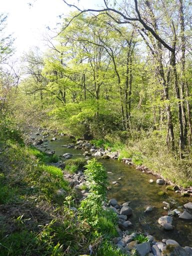
テラスでお絵かき。
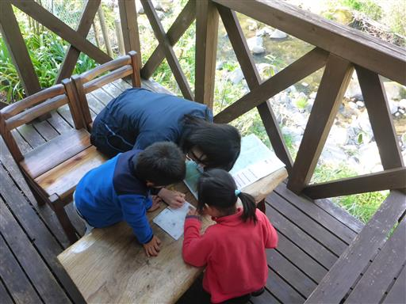
部屋の外に出て広場で少し遊ぶ。
この宿は部屋・食事とも申し分なく、良い宿に巡り合えた。
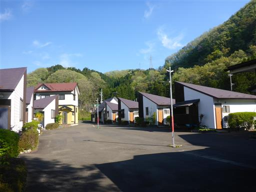
朝食をとったら出発。本日は秋保温泉の周辺を観光する予定だ。
観光案内所に車を停める。
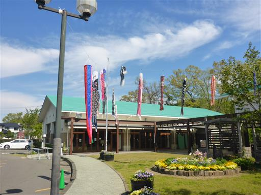
むすび丸。宮城県のゆるキャラだ。
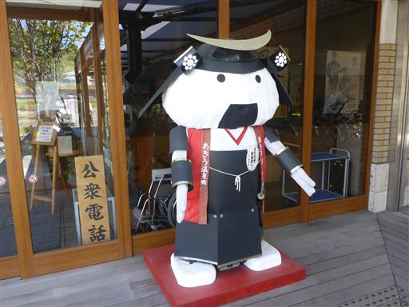
かつて秋保温泉を走っていた電車の模型が置かれている。
ボタンを押すと実際に電車が走るため、子供たちが食いついている。
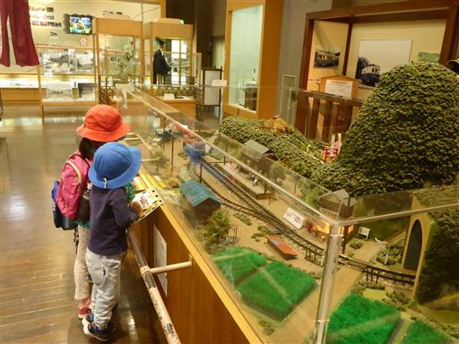
本日は最初に磊々峡を歩く予定。
観光案内所を出て入口まで歩く。峡谷沿いに遊歩道が整備されている。
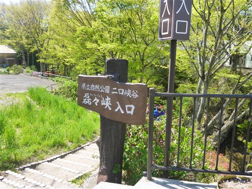
峡谷を一望できる場所まで階段を下りていく。

奇岩に囲まれた深い峡谷。なかなかの景観だ。
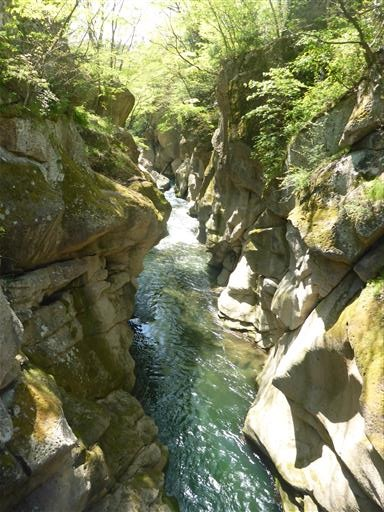
ここから下流方向に遊歩道を歩いていく。
観光客の数はそこそこ多く、賑わっている。
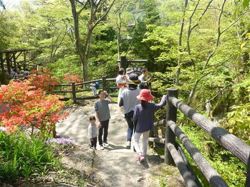
奇面巌。よく分からないが、右にある横顔に見える岩だろうか？
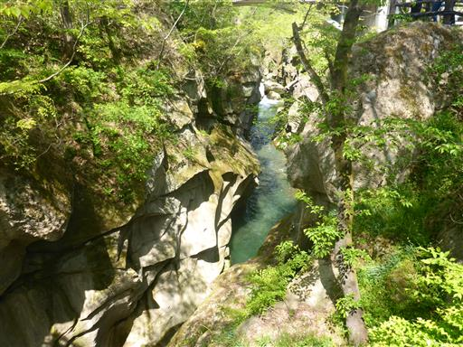
落ちそうな岩を棒が支えているように見える。川を流れてきた棒がここに引っかかったのだろう。
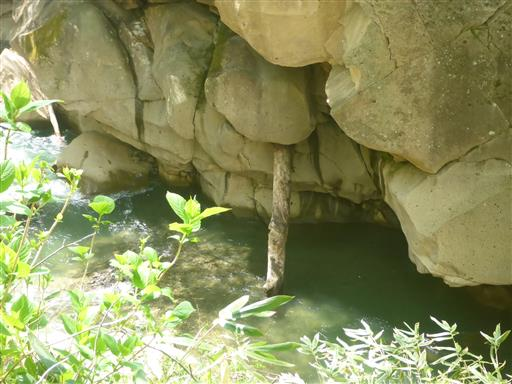
三筋滝。いくつか岩壁を流れ落ちる滝を見ることができる。
どれも水量は多くないので迫力はない。
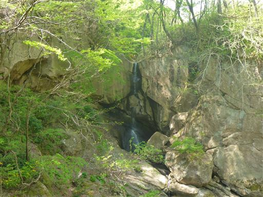
途中で赤い橋があったので渡ってみる。歩行者専用の橋だ。
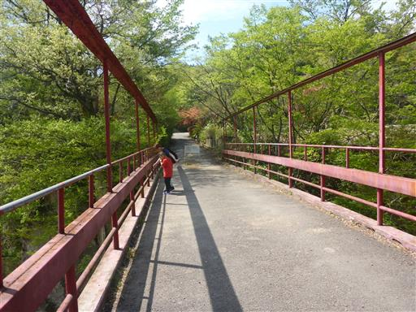
橋から望む景色。この辺りは川幅が広くなっている。
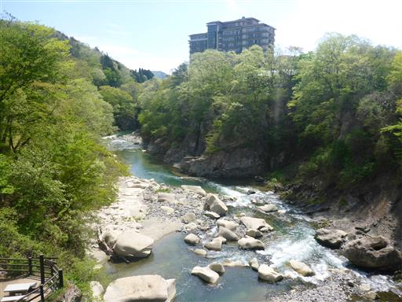
天斧岩。岩が真っ二つに割れている。
おそらく岩が上から落ちた衝撃で割れてしまったのだろう。
岩壁を見ると、今にも落ちそうな岩が他にもいくつか見られる。
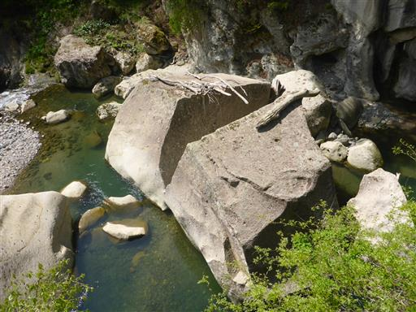
ちょうど新緑の季節で、歩いているだけでも気持ちが良い。
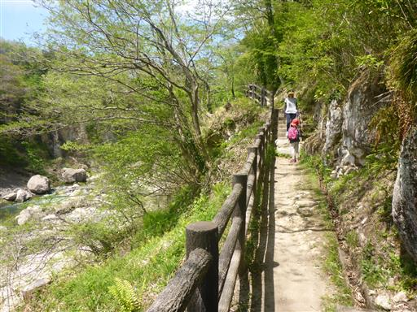
くるみの殻を発見。何個か拾って遊ぶ。
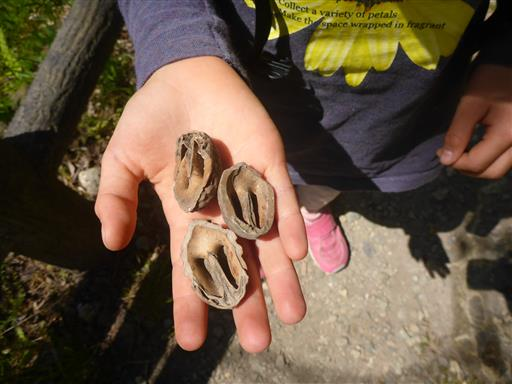
磊々峡の終点に到着し、車道と合流する。
車道を歩いて戻るのはつまらないので、少々時間はかかるが元来た道を戻る。
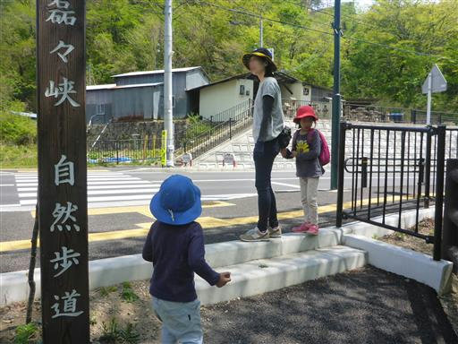
磊々峡スタート地点の硯橋に戻ってくる。
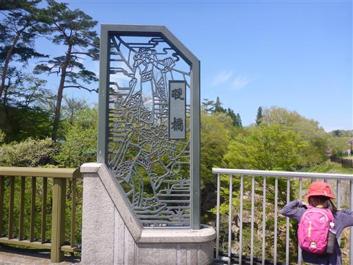
この橋からも景色を楽しむことができる。
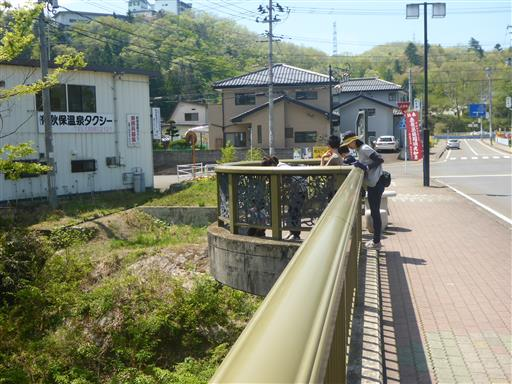
最初に見忘れてしまったハート形のくぼみを見下ろす。
恋人の聖地に指定されているらしい。ちょっとたまり水が汚いのが難点だ。
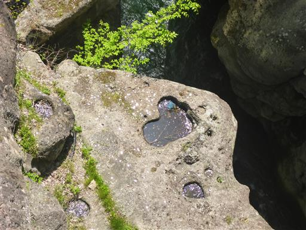
磊々峡の見学を終えたら、二口峡谷を上流方面に移動し秋保大滝を見学する。
一大観光地のため駐車場は車でいっぱいだ。

時刻は11時過ぎなので、側にある「穣庵」という蕎麦屋に入る。
昼食にはまだちょっと早いが、混むと嫌なので早めの入店だ。
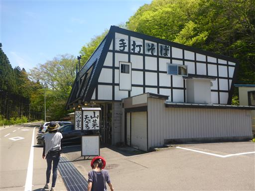
昼食をとったら滝見学。神社の奥にあるため、境内に入る。
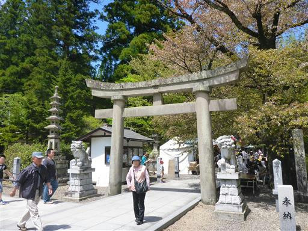
境内は多くの露店が出ていて賑わっている。
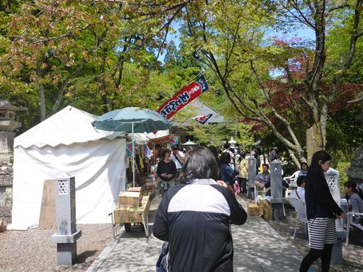
神社にお参りしてから滝を見に行くことにする。
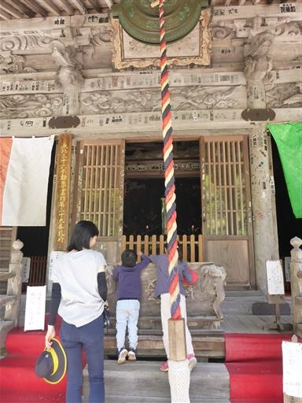
秋保大滝の展望台に到着。落差55m、水量が多く非常に迫力のある滝だ。
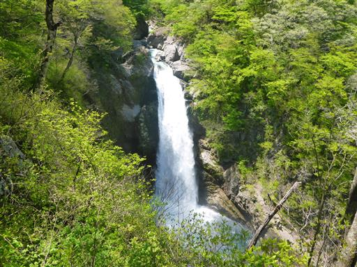
滝の側に下りられる道があるようなので行ってみることにする。
立派な橋で川を渡る。この辺りも新緑が美しい。
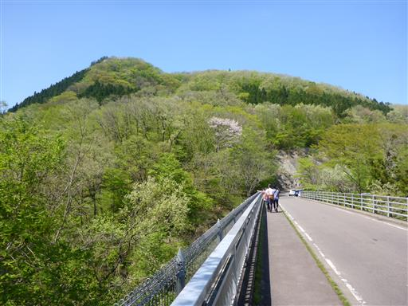
橋から望む峡谷。滝はもう少し先にあるため、ここからは見えない。
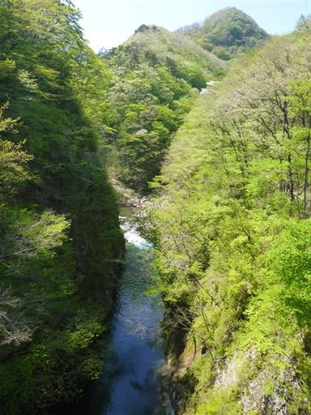
川に向かって階段を下りていく。
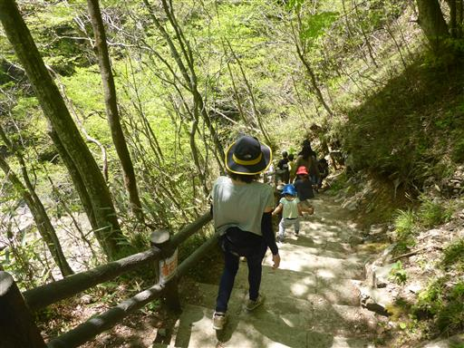
小さな水の流れは手をつないでジャンプ！
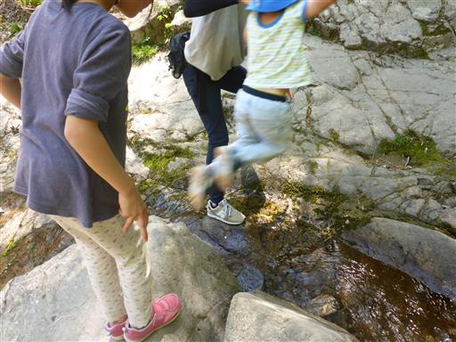
岩を登って行くと滝に近づくことができる。
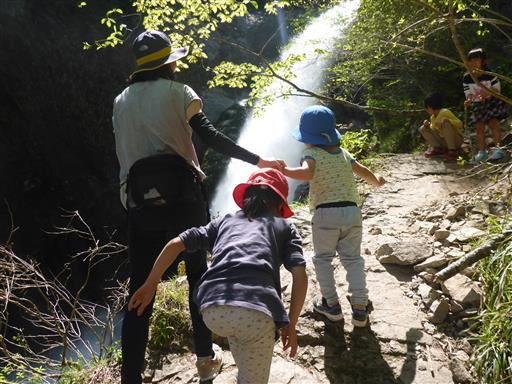
間近で臨む秋保大滝。

滝壺は大きい。
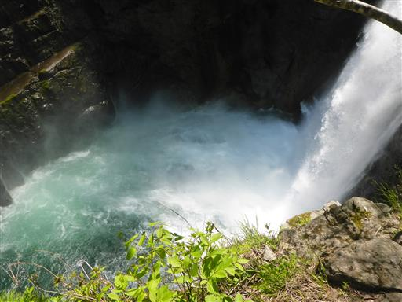
飛び散る多量の水しぶきで虹ができている。
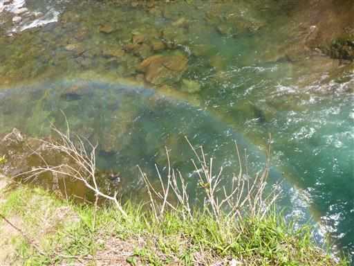
河原で多くの人がたむろしているため、我々も河原に下りて遊ぶことにする。
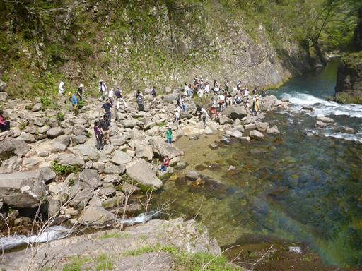
大小様々な石が転がっている。子供たちは器用に石を乗り越えて移動している。
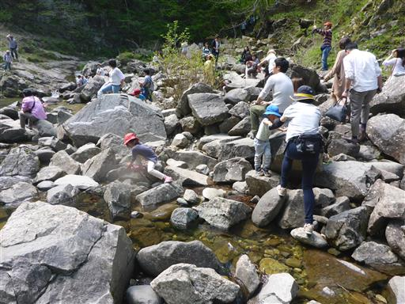
何やら虫を捕まえたようだ。テントウムシのように見えるが少し違う。
調べてみたらイタドリハムシという虫だった。
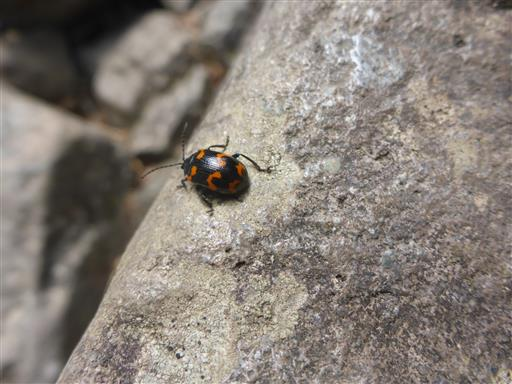
河原から秋保大滝を眺める。ここから見る姿が一番美しい。
角度が少しずれているため、幸いここまで水しぶきは飛んでこない。
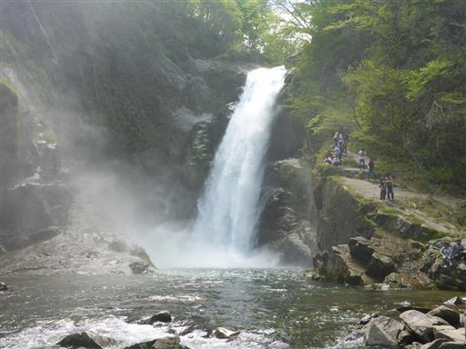
滝見学を終えたら露店で食べ物を買って一休み。
娘は団子、息子はかき氷だ。

二口峡谷のさらに上流に移動して、磐司岩と姉妹滝を見学したかったのだが、
まだ雪で行けないらしいので、蔵王まで戻って水芭蕉の森を見学することにする。
こちらの駐車場は車が少なく寂しい限りだ。
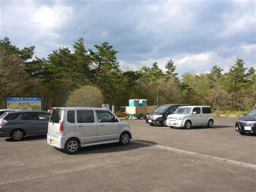
木道が整備されている。周りには笹原が広がっているので、水芭蕉を探しながら歩く。
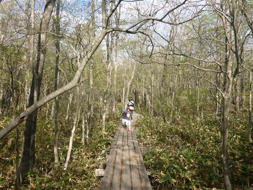
水芭蕉を発見。しかし少し時期が遅すぎたため
もう花は倒れてしまって葉が大きく目立っている。
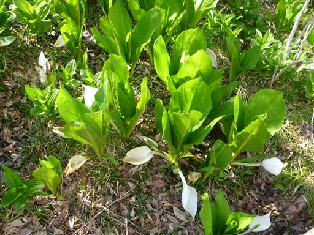
カタクリの花も所々に咲いている。
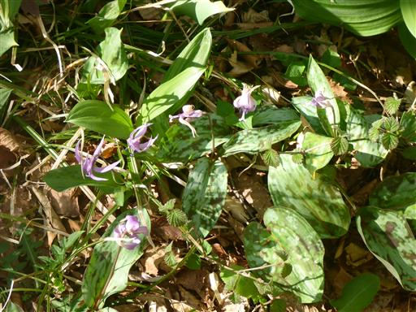
地面を埋め尽くす水芭蕉。水芭蕉の数は多いが木が景観を損ねている。
2年前に訪れた池ヶ原湿原の方が景観としては優れている。
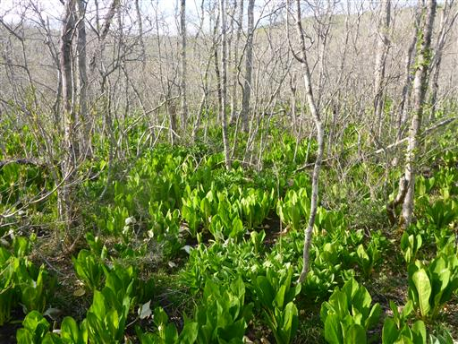
水芭蕉の森の奥に、どうだんの森がある。
まだドウダンツツジの咲く季節ではないが、時間があるため行ってみることにする。
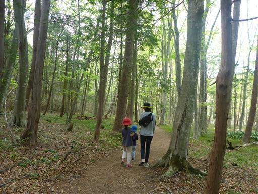
どうだんの森に到着。まだほとんど冬の景色だ。
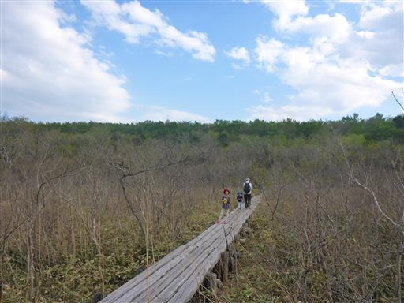
新芽が出ている。花期まであと1ヶ月だ。
ぐるっと一周回ったら宿に戻ることにする。
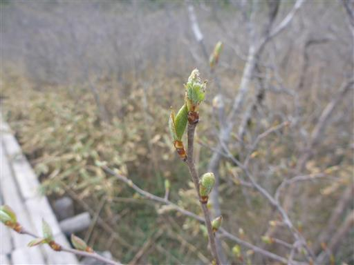